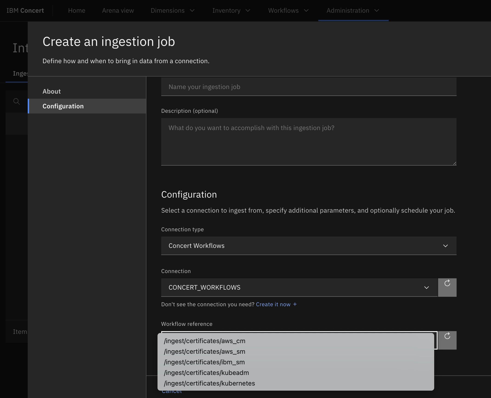
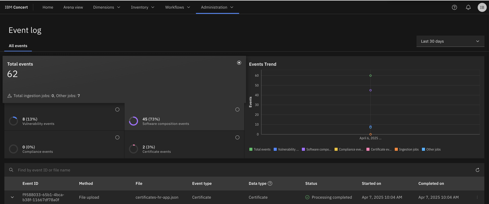
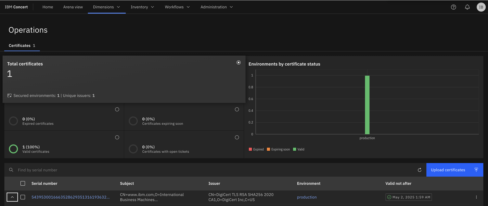

Managing Operations¶
Objective¶
In order to use Operation dimension, an organisation need to ingest its application certificates or environment certificates in IBM Concert using either Concert toolkit or workflows. Then in Concert we can view the list of certificates and their validity status. Then we can create tickets in third-party ticketing system to renew or replace expiring certificates.
In this lab, you will manually use the concert toolkit to upload our micro-services certificates in IBM Concert.
Prerequisite¶
- IBM Concert must be installed
- You have run the manual data ingestion script
Content¶
- Managing Operations
- Objective
- Prerequisite
- Content
- Certificates data ingestion
- Certificates management
Certificates data ingestion¶
Certificates can be ingested in Concert following several way:
- using built-in concert workflow certificate ingestion from a kubeadm (in Administration->Integration->Create Ingestion job) 
- using concert-toolkit for applications certificates during the CI/CD process
{kind=link}
We will use Concert toolkit to ingest a sample certificate in Concert.
Here are the manual steps to follow:
- Connect on the machine you have provisioned on Techzone in Lab0
ssh itzuser@<VM ip address> -p 2223 -i /path/to/concert/sshkey/pem_ibmcloudvsi_download.pem
umask 022
- Take a look at the certificate template provided by Concert Toolkit
In this file you can see that it is possible to generate certificate SBOMs using 3 ways:
- Line 22: Providing an URL (it is what you are going to do)
- Line 26: By reading certificate files
- Line 33: Providing manually certificates details
As you have not deployed the application components in these labs, we use https://www.ibm.com url to get the certificate. But in a real deployment environment, you will replace this URL with your application deployment URLs.
- Source the ingestion job environment variables for hr-app component
cd $HOME/concert-bootcamp/SBOMs-ingestion
source app-common-variables.variables
source hr-app.variables
- Create a concert toolkit config file from the certificate template
envsubst < templates/cert-sbom-values.yaml.template > $HOME/concert-bootcamp/SBOMs-ingestion/concert_data/${COMPONENT_NAME}/cert-sbom-values.yaml
- Generate the certificate SBOM using Concert toolkit
APP_COMMAND="cert-inventory --cert-config /app/sample/cert-sbom-values.yaml"
SRC_PATH="$HOME/concert-bootcamp/SBOMs-ingestion/concert_data/${COMPONENT_NAME}"
OUTPUTDIR="$HOME/concert-bootcamp/SBOMs-ingestion/concert_data/${COMPONENT_NAME}"
podman run -v "${SRC_PATH}":/app/sample -v "${OUTPUTDIR}":/toolkit-data --rm ${CONCERT_TOOLKIT_IMAGE} /bin/bash -c "${APP_COMMAND}"
- Patch the sbom generated
At the time we write this lab (May 2025), there is 1 issue in the sbom generated. Follow this steps to correct it:
sudo chmod 666 $HOME/concert-bootcamp/SBOMs-ingestion/concert_data/${COMPONENT_NAME}/certificates-hr-app.json
vi $HOME/concert-bootcamp/SBOMs-ingestion/concert_data/${COMPONENT_NAME}/certificates-hr-app.json
-
Save the file (:wq)
-
Upload the certificate file in Concert using Concert API
{kind=link}
curl -k -X "POST" -H "accept: application/json" -H "InstanceID: ${CONCERT_INSTANCE_ID}" -H "Authorization: C_API_KEY ${CONCERT_APIKEY}" -H "Content-Type: multipart/form-data" -F "data_type=certificate" -F "filename=@${OUTPUTDIR}/certificates-hr-app.json" "https://${CONCERT_HOST}:${CONCERT_PORT}/ingestion/api/v1/upload_files"
- Check your certificate upload in IBM Concert UI
After logging in your IBM Concert UI, you can see your ingested certificate from the Operation dimension.
-
First, you can check that the upload is successfull by looking at menu Administration->Event log. Here you can see the status of all the files ingested 
-
Then, you can navigate the the menu Dimensions->Operation to see your certificate 
{kind=link}
{kind=link}
Certificates management¶
Walkthrough the uploaded certificates:
- Home page - Operations dimension
- Operation Dimension
- Select a certificate
- Renewal if expired